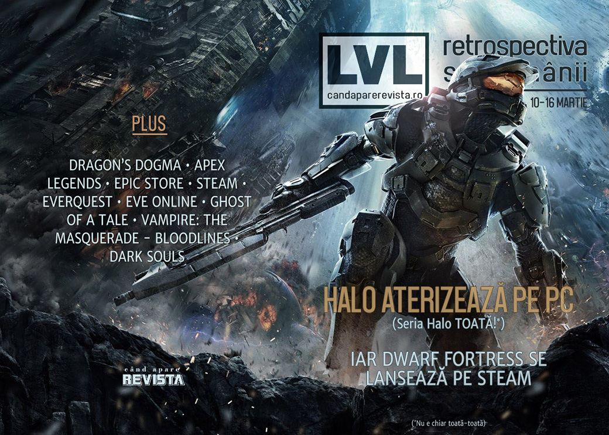

Retrospectiva săptămânii 10-16 martie 2019
Microsoft aduce Halo Master Chief Collection pe PC (inclusiv Steam), Epic sunt acuzați că spionează activitatea utilizatorilor săi pe platforma Steam, DirectX 12 ajunge și pe Windows 7, Dwarf Fortress ajunge într-un final și pe Steam (dar nu din rațiuni comerciale), Steam și Epic aduc îmbunătățiri la magazinele lor și ne readucem aminte de EverQuest.
Linkuri rapide:

Ştiri
- Netflix face un serial animat bazat pe jocul Dragon’s Dogma (Games Informer, Variety, Eurogamer)
- World Wide Web a împlinit 30 de ani - pe 12 martie 1989 Tim Berners-Lee a apăsat butonul mare și roșu care a aprins „ve-ve-ve-ul”. (CERN, Internet Society, Web Foundation, BBC, Life, Liberty, and Technology)
- Se pare că Electronic Arts l-ar fi plătit pe streamer-ul Ninja cu 1 milion de dolari ca să promoveze Apex Legends la lansare. (Games Informer, Destructoid, PC Gamer, GameDaily.biz, GamesIndustry.biz)
- S-au anunțat jocurile nominalizate la premiile BAFTA 2019, care vor fi decernate pe 4 aprilie. (Shacknews, The Guardian, GamesIndustry.biz)
- Valve extinde funcționalitatea Steam Link pentru ca jocurile să poată fi jucate și pe dispozitive mobile. (Variety, Eurogamer, Games Informer, PC Gamer, The Verge)
- Epic Games au fost acuzați de acces neautorizat în fișierele utilizatorilor, după ce câteva threaduri de pe Reddit și ResetEra au detaliat cum launcher-ul Epic citește datele generate de Steam, printre care lista de prieteni și salvările jocurilor, ocolind API-ul public al Steam și neținând cont de setările de confidențialitate. (PC Gamer, Reddit, ResetEra)
- Epic și Tim Sweeney se apără, spunând că nu se întâmplă nimic necurat și că fișierele rămân pe mașinile utilizatorilor până la primirea unui accept explicit. (DSOGaming, Eurogamer, RPS, Gamasutra)
- Valve răspunde la un comentariu anunțând că nu sunt de acord cu practica Epic și vor investiga problema în continuare. (BleepingComputer, PC Gamer, Games Informer, Eurogamer)
- Câteva noutăți de la Microsoft, anunțate în ultima ediție a Inside Xbox:
- Jocurile de PC vor putea fi stream-uite pe Xbox One (The Verge, PCGamesInsider.biz, Shacknews, Variety)
- Detalii noi despre platforma de cloud streaming xCloud (The Verge)
- DirectX 12 vine și pe Windows 7, primul joc suportat fiind World of Warcraft (The Verge, PC Gamer)
- Xbox Live primește suport pentru iOS și Android (Shacknews, Eurogamer, Games Informer, GamesIndustry.biz)
Articole (critică, dev, design)
- 6 Months Without Windows: The Ugly Truth About Gaming On Linux (The Journal Blog)
- How language shapes the way we play (Eurogamer)
- The Makers Of Magic: The Gathering Say They're Trying To Make It Less Of A Boys Club (Kotaku)
- Tidying Up the Old Videogame Collection (Unwinnable)
- Why I love hidden object puzzle adventures (PC Gamer)
- The joy of being a passenger in video games (Polygon)
- Goodbye, Google+, You'll be Missed, At Least By RPG Fans (Waypoint)
- We Need More Games That Let You Play As Animals (Kotaku)
- Heroes of the Storm pros try to salvage their careers after Blizzard killed its pro scene (PC Gamer)
- The True Power Of VR (GameSpace)
Actualitate
- The co-creator of Dwarf Fortress is getting older, but his work remains unfinished (Polygon)
- Yet Another Controversy - The Steam Problem (Gamereactor)
Not-a-review
- Exploring Falmouth and the naval history behind Return of the Obra Dinn (Eurogamer)
- Armadillo Burning (Unwinnable)
- Searching the Sunless Skies For A Reason To Care (Sidequest)
- Overthinking games: designing natural beauty in Eastshade (RPS)
- Searching for Souls in Reverie (Unwinnable)
- How Ghost of a Tale imagines and explores a world of prejudice (Eurogamer)
- The impossible year-long plan to destroy EVE Online’s deadliest fortress (PC Gamer)
- Don’t Overthink It: ‘Devil May Cry 5’ Is a Deliriously Fun Video Game (The Ringer)
- On the logic and emotion within Chess and The Quiet Sleep (Historian On Games)
- Vampire: The Masquerade – Bloodlines accidentally gave me a power fantasy (RPS)
Industrie
- How it feels to release an indie game in 2019 (Polygon)
- Kicking off the streaming wars (GamesIndustry.biz)
- Tim Sweeney: ‘The game business will change more in the next five years than the past ten’ (MCV) (TL;DR pe PCGamer sau GamesIndustry.biz)
- Nintendo at 130: ‘It’s on us to create that wow moment for players (The Guardian)
- When good monetization meets bad ethics (GamesIndustry.biz)
Istorie, retrospectivă
- Cargo Commander is a forgotten classic (Eurogamer)
- Insomniac Games: From Purple Dragon to Incredible Spidey (Variety)
- Big in Japan, 25 Years Ago? The 3DO’s Secret Japanese Life (The Land of Obscusion)
- Ten years on from Arkham Asylum: How Batman and his foes shaped Rocksteady (MCV)
- Star Wars Republic Commando’s simplicity is what we need in 2019 (PCGamesN)
- Ne aducem aminte de EverQuest:
Dev, making of, mecanici
- The eyes have it: Creating believable digital humans (GamesIndustry.biz)
- How Failbetter Games devised Sunless Skies ‘ facets progression system (Gamasutra)
- Meet the sound designer going to great lengths to capture sounds for games (PC Gamer)
- The Ups and Downs of Homeworld (Medium)
- Video: Recreating a classic era in automotive history in Mafia III (Gamasutra)
- Take a look at the making (and marketing) of Dawn of Man (Gamasutra)
- Video: Creating the unique visuals of Homeworld: Deserts of Kharak (Gamasutra)
Design, world-building, artă
- Give this fantastic Generation Zero concept art an ocular patdown (Destructoid)
- The Way Is Shut (Kotaku)
Anunţuri şi lansări de jocuri
Anunţate
- Halo: The Master Chief Collection vine și pe PC (Destructoid, Ars Technica, Shacknews)
- Dwarf Fortress se lansează pe Steam, cu un pachet grafic oficial (RPS, Polygon, Shacknews)
- Ready or Not (DSOGaming )
- Nanotale, un nou typing RPG (PC Gamer)
- Impostor Factory, următorul joc al celor de la Freebird Studios (To the Moon devs) (PC Gamer)
- Tactical Breach Wizards (Games Informer)
- Islanders (Kotaku)
- Rise of the Giant, DLC pentru Dead Cells (Shacknews)
- ’83 (DSOGaming )
- Rosewater (TechRaptor)
- Solar Ash Kingdom (Kotaku)
- VirtuaVerse, un point and click cyberpunk (PC Gamer)
- Atomicrops (Eurogamer)
- Back 4 Blood, un nou coop shooter de la studioul care făcut ‘Left 4 Dead (Variety)
- Sniper Elite 5, Sniper Elite VR și versiune remasterizată pentru Sniper Elite V2 (PC Gamer)
- Mutazione (RPS)
- A Year Of Rain (GameSpace)
- Towers (Destructoid)
- Stela (Niche Gamer)
Acum cu dată de lansare
- Photographs: 3 aprilie (Games Informer)
- Weedcraft Inc: 11 aprilie (Eurogamer)
- Yuppie Psycho: 25 aprilie (Games Informer)
Amânate
- Steel Division 2: 2 mai în loc de 4 aprilie (PC Gamer)
Lansate
- 11 martie: Don’t Escape: 4 Days in a Wasteland (Steam, gog.com)
- 12 martie: Hypnospace Outlaw (Steam, gog.com)
- 12 martie: Factory Town (early access) (Steam)
- 12 martie: The Caligula Effect: Overdose (Steam, gog.com)
- 12 martie: Trüberbrook (Steam, gog.com)
- 12 martie: Outlaws of the Old West (early access) (Steam)
- 12 martie: Exocraft iese din early access (Steam)
- 13 martie: Baba Is You (Steam)
- 14 martie: RICO (Steam)
- 15 martie: ONE PIECE World Seeker (Steam)
- 15 martie: Mars Underground (Steam)
- 15 martie: Tom Clancy’s The Division 2 (Ubi Store, Epic Store)
Prăvălii de jocuri
Știri
- The Epic Games Launcher has a search function now (PC Gamer)
- Discord overhauls store, giving developers better discoverability and analytics tools (GameDaily.biz)
- Epic Store development roadmap includes achievements, cloud saves and more (PC Gamer)
- Any Steam game can now use Valve’s low-latency, DoS-proofed networking (Ars Technica)
- Steam user reviews will no longer count ‘off-topic review bombs’ (Gamasutra)
- Tim Sweeney, founder of Epic Games, comments on current and future Epic Store exclusive games (DSOGaming )
Jocuri noi în catalog
- ‘Minecraft’ Coming to Xbox Game Pass in April (Variety)
- Supergiant’s RPG Pyre comes to Origin Access (PC Gamer)
Jocuri gratis și free weekends
- Half-Life headcrabs have infested Two Point Hospital’s free weekend (PC Gamer)
- Free to play version of Dead or Alive 6, Core Fighters, is now available for download on Steam (DSOGaming )
Reduceri și promoții
- Civilization 6 is seriously cheap in the new Humble Strategy Bundle (PC Gamer)
- Best PC gaming deals of the week – 15th March 2019 (RPS)
- Weekend PC Download Deals for Mar. 15: Free GRID 2 (Shacknews)
- Weekend Console Download Deals for Mar. 15: PS4 Great Indoors Sale (Shacknews)
- A Nintendo Switch bundle, PlayStation store sale, and more of the week’s best gaming deals (Polygon)
Retrospectiva săptămânii este rubrica duminicală în care trecem în revistă evenimentele săptămânii de pe frontul de gaming: știri şi articole (scrise de alții, bineînțeles, că e mai ușor aşa), industrie, lansări, oferte de jocuri, toate numai de savurat la cafeaua de duminică dimineața.
De asemenea, rubrica e deschisă oricui vrea și poate contribui. Dacă ai citit vreun articol sau vreo știre interesantă și crezi că merită incluse în retrospectiva săptămânii, te așteptăm pe forum pe unul dintre topicurile dedicate: Știri, Articole, Gaming România].